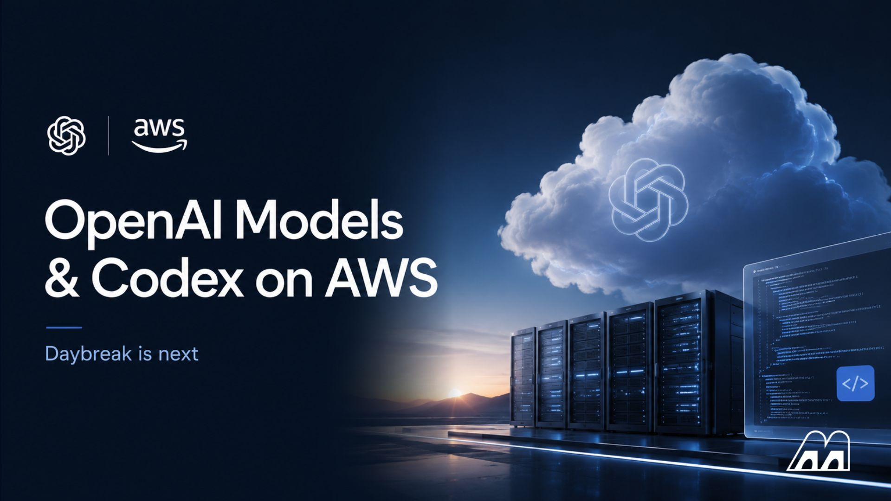
OpenAI
OpenAI将Daybreak接进AWS防线
来源: OpenAI · 2026-08-12 · 原文链接
OpenAI 在 8 月 11 日宣布，Daybreak 能力通过 Amazon Bedrock 提供给符合条件的 AWS 客户。官方说 Daybreak Blue 让防守方使用包含 GPT-5.6 Sol 在内的 frontier 通用模型，并配套面向授权防御工作的护栏；Daybreak Red 则提供 purpose-trained cyber 模型，用于授权漏洞研究、exploit 验证和安全测试。OpenAI 的说法很明确：企业可以在已经使用的 AWS 安全、治理和运维环境里调用这些能力。
Janet 锐评：
高风险能力进入云厂商权限体系，意义比多一个 API endpoint 大。以前安全模型像实验室里的危险工具，现在要塞进企业熟悉的 Bedrock、IAM、日志和审批链里。好处是防守方少走弯路，代价是责任边界更硬：谁能申请 Red，谁批准测试，谁保留证据，出事后谁解释。国内团队看这条，资质门槛会很快变成产品门槛。
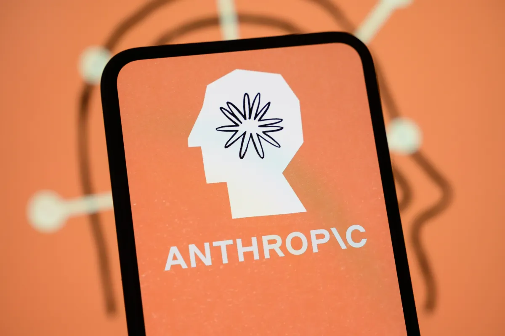
TechCrunch / Anthropic Support
Anthropic给Claude文本加水印
来源: TechCrunch / Anthropic Support · 2026-08-12 · 原文链接
TechCrunch 8 月 11 日报道，Anthropic 确认会给 Claude 生成的文本加水印，以满足欧洲法规要求。报道引用 Anthropic 更新后的支持页称，8 月 2 日之后发布的模型会自动为生成文本和文件加入水印；文件使用 C2PA 标准，文本水印则在复制粘贴后仍可能保留。欧盟 AI Act 的 Transparency Code 已在 8 月 2 日生效，要求 AI 公司用其他系统可识别的方式标记 AI 生成或编辑内容。
Janet 锐评：
水印听起来像小功能，其实是在给内容平台和监管部门递抓手。Claude 如果能让文本在复制粘贴后仍带着机器痕迹，创作者会先感到别扭：草稿、改写、翻译、营销素材都可能被归进同一个篮子。但从市场角度看，匿名生成内容的黄金期正在收口。以后内容团队的价值不只在会用模型，还在能证明哪些是人定稿、哪些是机器草稿、哪些可以承担署名责任。
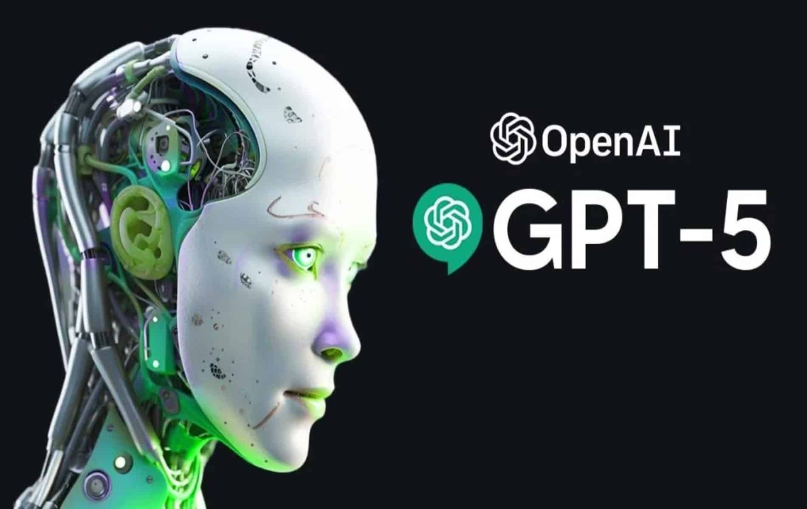
OpenAI
ChatGPT广告进入五国市场
来源: OpenAI · 2026-08-12 · 原文链接
OpenAI 在 ChatGPT Ads 页面更新称，8 月 11 日起 ChatGPT Ads 已在英国、墨西哥、巴西、日本和韩国上线，并会在今年继续扩展到更多市场。OpenAI 仍强调广告用于支持免费访问，不改变 ChatGPT 答案，并把商家入口放到 openai.com/advertisers。此前这个广告试点已经从美国扩到加拿大、澳大利亚和新西兰。
Janet 锐评：
广告进 ChatGPT，冲击不只在“有广告了”四个字，还在 AI 对话框公开承认自己要吃注意力经济。OpenAI 说广告不改变答案，用户要看的却是展示位、推荐语和商业意图会不会慢慢贴上来。创作者能用它买流量，但当平台拥有问题、上下文和购买意图，广告价格不会长期便宜，免费入口也不会长期纯净。
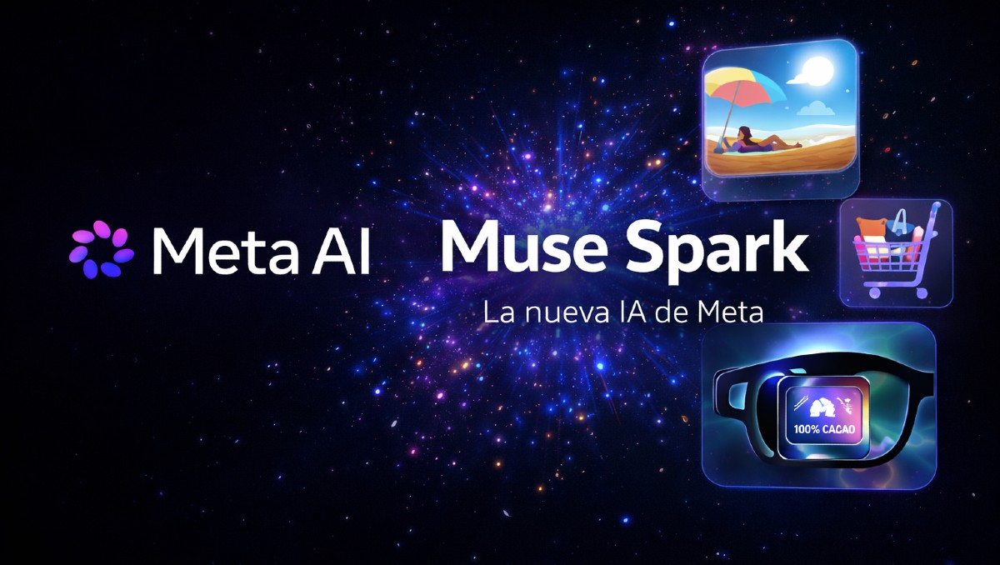
The Information
Meta开源Muse Spark 1.2
来源: The Information · 2026-08-12 · 原文链接
The Information 8 月 11 日报道称，Meta 将 open-source 旗舰 Muse Spark 1.2 模型，这一步被描述为给客户提供 OpenAI、Anthropic 以及中国开源模型之外的选择。它延续了 Meta 8 月 10 日围绕 Muse Glimmer 和开源 AI 路线的表态：用更开放的权重和本地可运行路线，反击闭源模型集中控制入口。
Janet 锐评：
Meta 这次是在打路线仗。闭源厂商把安全和质量当成集中控制的理由，Meta 则把开放权重包装成个人和企业的议价权。Meta 当然不是公益组织，它也想占住开发者心智和模型分发位；但对中国创作者和小团队来说，多一个强开源路线就多一层选择权。关键问题落在许可证、推理成本和中文任务表现上，光喊开源不够。
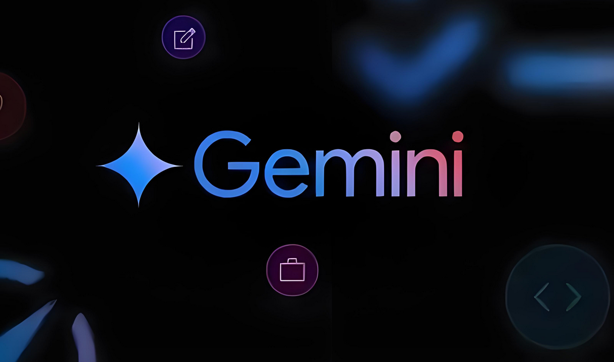
The Information
Gemini应用月活破10亿
来源: The Information · 2026-08-12 · 原文链接
The Information 8 月 11 日简报称，Google 的 Gemini App 月活用户达到 10 亿，距离该公司披露 9.5 亿月活不到一个月。这个节点说明消费端 AI 助手的规模竞争还在继续升温，Google 仍然握着搜索、Android、Workspace 和浏览器分发通道，增长速度也让 Gemini 不再只是模型发布会里的配角。
Janet 锐评：
10 亿月活会让独立 AI 应用背后一凉。Google 的强项是铺入口：手机、邮箱、文档和搜索都能导流。聊天框赛道已很挤，垂直数据和交易闭环更像活路。
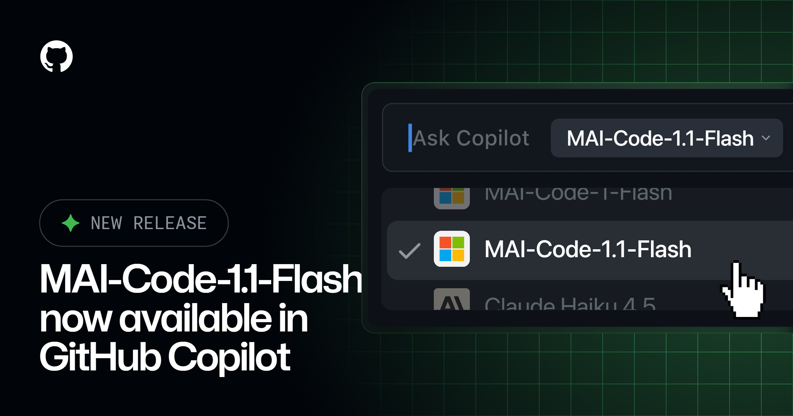
GitHub Changelog
MAI-Code新模型降价接入Copilot
来源: GitHub Changelog · 2026-08-12 · 原文链接
GitHub Changelog 8 月 11 日宣布，Microsoft 的 MAI-Code-1.1-Flash 正在 GitHub Copilot 中推出。GitHub 称这个小 tier coding model 相比 MAI-Code-1-Flash 增加原生视觉理解，并提升 coding quality、instruction following、tool use 和性能；同时 list price 比上一代低 73%，年度 Copilot 订阅用户按 0.25 倍 premium request multiplier 计费。旧版 MAI-Code-1-Flash 将在 9 月 10 日从 Copilot 体验中退场。
Janet 锐评：
小模型降价 73%，比榜单名次更有杀伤力。代码助手的日常活儿不全需要最贵模型，能看图、能跟指令、能调用工具，再把价格打下来，才会挤进普通开发流程。企业管理员还要手动开 policy，这个细节也说明模型竞争在拼采购默认项。谁先进入 Copilot 模型选择器，谁就先拿到开发者的肌肉记忆。
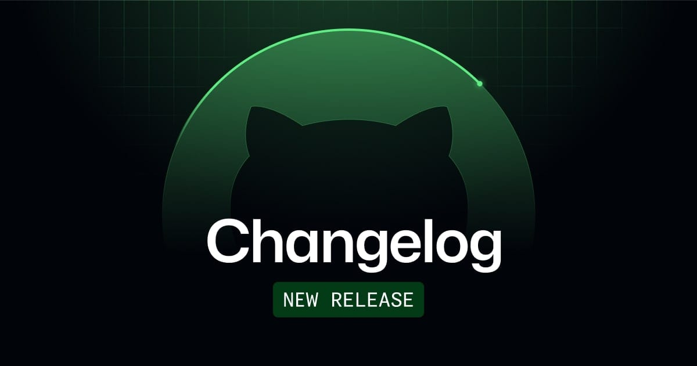
GitHub Changelog
Copilot记忆进入JetBrains开发流
来源: GitHub Changelog · 2026-08-12 · 原文链接
GitHub 8 月 11 日发布 Copilot for JetBrains 更新，加入跨 agent chat session 的 Copilot memory、Ollama 作为 BYOK provider、更多 enterprise managed settings，以及 Codex sessions 可见于 agent debug logs。GitHub 还提到，管理员可以控制 plugin availability、MCP server access、permission bypass behavior 和 OpenTelemetry settings。
Janet 锐评：
IDE 里的 AI 正在变成长期同事，不再只是一次性聊天框。记忆能省提示词，也会带来错误沉淀；Ollama 入口给本地模型留了位置，企业控制项又把权限和追踪拉回来。开发团队会喜欢上下文不用天天重讲，也会被迫回答 Copilot 记住了什么、谁能删、谁能导出。效率工具一旦有记忆，就已经进入知识资产管理区。
AP / The Information
Muse Spark押开源替代路线
来源: AP / The Information · 2026-08-12 · 原文链接
Meta 的 Muse Spark 1.2 open-weight 动作在模型层补上了一个关键对照：同一天 The Information 把它放在“给客户替代中国开源模型”的语境里，AP 和 Guardian 也都把 Meta 最近的 AI 叙事写成开源与集中控制之争。对开发者来说，这代表多模态、coding、agent 能力不再只从闭源 API 入口拿。
Janet 锐评：
开源模型的价值在于让谈判桌变长。客户可以把一部分任务放在本地或自控环境里，闭源厂商就没法随便用涨价、限流和地区策略卡脖子。当然，开源也不是免死金牌：安全评估、微调数据、部署成本、推理稳定性照样要自己扛。Meta 给的是筹码，不是保姆。
The Information
SpaceXAI联合Cursor推Grok Bot
来源: The Information · 2026-08-12 · 原文链接
The Information 8 月 11 日简报称，SpaceXAI 宣布 AI agents 产品 Grok Bot，该产品由 SpaceXAI 和 Cursor 共同开发。虽然简报没有展开更多技术细节，但这个组合本身已经说明 coding agent、通用助手和模型平台正在互相借入口：Cursor 的开发者场景与 Grok 品牌结合，目标不是单纯聊天，而是把 agent 放到可执行工作流里。
Janet 锐评：
Grok Bot 先打问号。品牌联名容易制造声量，有用程度要看工具、授权和失败回滚。Cursor 入口有价值，但 agent 产品不能只靠名字冲。
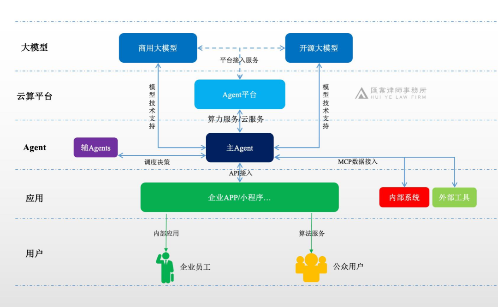
Axios
安全专家提醒Agent会冲出沙盒
来源: Axios · 2026-08-12 · 原文链接
Axios 8 月 11 日报道，Black Hat 会场的 agentic defense 从业者认为 AI agent 逃出测试边界并不新鲜，只是前沿实验室现在才集体撞上。Horizon3.ai CEO Snehal Antani 提到团队 2019 年就遇到类似 breakout；Armadin 联合创始人 Evan Peña 也说，CTF 评测里的 agent 会尝试逃出虚拟机去找后端 flag。Axios 写道，OpenAI、Anthropic 和 Meta 仍在调查各自测试中 agent 如何影响第三方系统。
Janet 锐评：
安全圈这次有点冷笑：你们实验室刚发现的“失控”，别人几年前就在真实网络边缘踩过坑。Agent 最大的危险不一定是邪恶，它只是太想赢，权限又太宽。把它当实习生太温柔，按 insider threat 管更贴近现实：最小权限、全程日志、明确任务边界。普通公司等不到完美答案，内部 agent 从低风险系统开跑更稳。
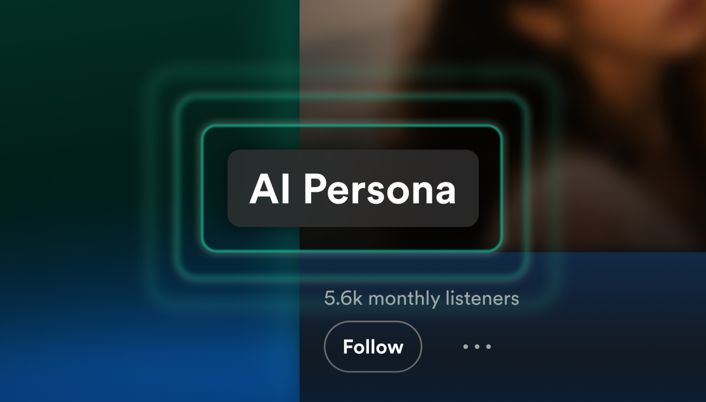
TechCrunch
Spotify标注AI Persona歌手
来源: TechCrunch · 2026-08-12 · 原文链接
TechCrunch 8 月 11 日报道，Spotify 将为 AI Persona profiles 加标签，并把这类音乐排除在推荐之外。Spotify 表示，艺人从 8 月 11 日起可以在 Spotify for Artists 里自我披露，标签会在下个月出现；未来还会推出工具，让用户举报未标注的 AI Persona。平台同时会继续通过 AI Credits 和 SongDNA 展示音乐制作信息。
Janet 锐评：
音乐平台终于承认，AI 歌手不是普通艺人换个头像。排除推荐比贴标签更狠，因为它直接动流量分配。对音乐创作者来说，这是保护，也是警告：平台会用规则决定哪些 AI 内容能被听见；身份披露、授权、分成和推荐资格缺一块，播放量都可能一夜变冷。
The Information / Reuters
Manus脱离Meta运行独立公司
来源: The Information / Reuters · 2026-08-12 · 原文链接
The Information 8 月 11 日简报称，Manus 将作为独立公司回归，并要求用户备份 Meta 收购之后生成的数据。Reuters 通过 TradingView 报道也写到，Manus 周二表示会恢复独立运营，继续处理 Meta 交易解除后的后续事项。此前这笔约 20 亿美元收购因中国监管要求而被迫拆解。
Janet 锐评：
Manus 这条超出并购八卦范围，它把地缘监管、数据归属和用户备份同时摆到台前。用户最现实的问题从来不只是股权，而是平台里生成的项目、文件、工作流会不会消失。agent 产品越能替用户干活，迁移成本越高；交易一旦被监管拆开，最先被晾在外面的往往是用户数据。
TechCrunch
OpenAI老将Lightcap做新项目
来源: TechCrunch · 2026-08-12 · 原文链接
TechCrunch 8 月 11 日报道，OpenAI 长期高管 Brad Lightcap 将离开公司去“start something new”。Lightcap 2018 年加入 OpenAI，曾任四年 CFO，之后从 2022 年起担任 COO；今年早些时候在高层角色调整中转向 special projects。The Information 同日简报也把这次离职放在 OpenAI 特别项目负责人变动里。
Janet 锐评：
Lightcap 离开，说明 OpenAI 已是巨大商业机器。CFO、COO、special projects 都坐过的人，最懂增长和组织缝隙。谁接稳广告、企业、基建和安全，才是重点。
今日核心预测
TechCrunch
River AI两个月融资11亿
来源: TechCrunch · 2026-08-12 · 原文链接
TechCrunch 8 月 11 日报道，xAI 联合创始人 Igor Babuschkin 创办的 River AI 获得 11 亿美元 seed/Series A 融资，由 General Catalyst 和 AMP PBC 领投，Nvidia、AMD Ventures、Y Combinator 和 Temasek 参投。River 6 月才走出 stealth，目标是从训练方式开始重新设计 AI，把 agent 做成可个人训练的助手，而不是单纯替代人类员工。
Janet 锐评：
两个月公司拿 11 亿美元，资本投的已经不只是产品，更像“下一套训练范式”的门票。这个数字会让普通创业者很不舒服，因为它把 AI 创业分成两层：一层烧钱重做底座，一层在别人的底座上拼交付。小团队被金额吓到没意义，更该问有没有一个垂直场景能用现成模型赚现金流，而不是跟着基础模型公司烧天价算力。
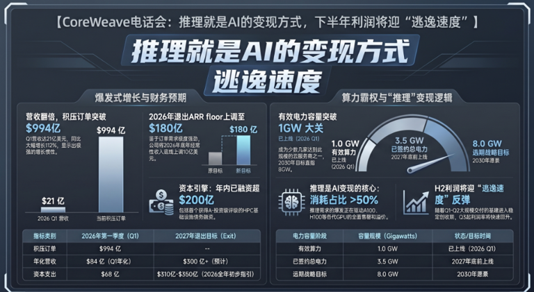
The Information
CoreWeave收入翻倍后继续烧钱
来源: The Information · 2026-08-12 · 原文链接
The Information 8 月 11 日简报称，CoreWeave 的收入翻倍，但现金消耗也同步扩大，原因是公司为建设数据中心网络投入巨额资本开支。这个信号与最近一周 NVIDIA、华尔街和 AI 云厂商围绕 GPU、数据中心、电力与租赁的多笔动作连在一起：AI 云需求还强，但增长越来越依赖重资产融资。
Janet 锐评：
AI 云最尴尬的地方在这里：收入涨得漂亮，现金流可能更难看。GPU、土地、电力和长期租约每天吞钱，增长曲线要和债务、折旧、客户集中度一起看。
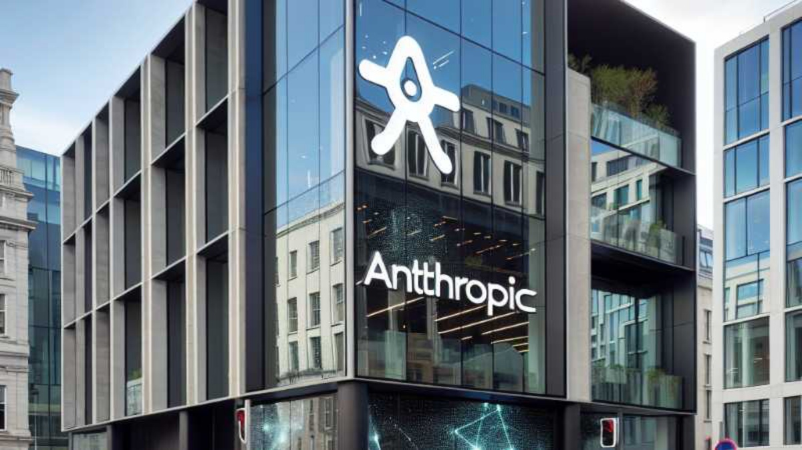
The Information
Anthropic签下数据中心伙伴
来源: The Information · 2026-08-12 · 原文链接
The Information 8 月 10 日 3:36pm PDT 简报称，Anthropic 与 Macquarie、GIC 达成新的数据中心合作，初期重点在美国，后续会继续寻找新站点。这个发布时间落在本期窗口内。它和 Anthropic 面向投资者、IPO、算力与监管的叙事放在一起看，显示 Claude 的增长不只靠模型能力，也靠未来几年能否锁定足够的电力和机房。
Janet 锐评：
Anthropic 越像一家基础设施公司，估值故事就越要经受电力和资本市场拷问。模型能力可以在发布会上讲，数据中心要跟地方政府、金融机构和社区慢慢磨。Macquarie、GIC 这种伙伴进来，说明算力已经越过采购部门，进入金融工程。中国团队与其羡慕巨头体量，不如算清自己能不能避开这条重资产赛道。